Живые изгороди.

Живые изгороди, особенно поддающиеся формированию, являются живой архитектурной формой в оформлении сада, которая служит его украшением и может выполнять роль ограды.
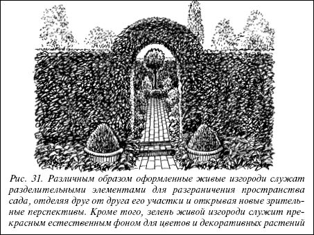
Рис. 31. Различным образом оформленные живые изгороди служат разделительными элементами для разграничения пространства сада, отделяя друг от друга его участки и открывая новые зрительные перспективы. Кроме того, зелень живой изгороди служит прекрасным естественным фоном для цветов и декоративных растений
Внимание
Живые изгороди очень ценны в экологическом отношении, так как зелень растений выделяет кислород, поглощает углекислый газ, снижает в значительной степени неблагоприятное загрязнение воздуха, служит природным фильтром и поглощает пыль, задерживая ее на листьях, гасит силу ветра и шум, выполняя роль шумопоглощающего барьера, создает психологически благоприятный спокойный зеленый фон вокруг участка, что очень способствует созданию атмосферы отдыха и покоя на территории сада.
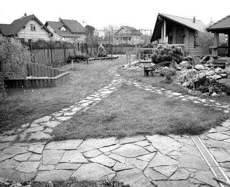
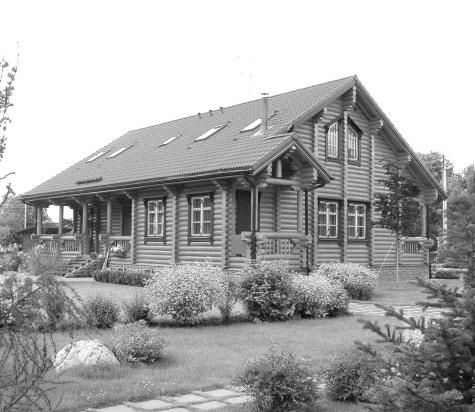
Живые изгороди органично вписываются в окружающую среду, становясь ее частью и продолжением, а также создают естественный живой фон для растений на участке.
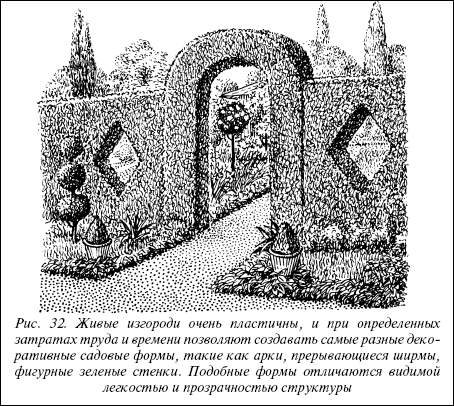
Рис. 32. Живые изгороди очень пластичны, и при определенных затратах труда и времени позволяют создавать самые разные декоративные садовые формы, такие как арки, прерывающиеся ширмы, фигурные зеленые стенки. Подобные формы отличаются видимой легкостью и прозрачностью структуры
Нельзя забывать и о практическом значении живой изгороди, которая может стать неприступной непроницаемой преградой не только для постороннего взгляда, но и для проникновения на участок извне. Колючие изгороди из растений, имеющих на своих стеблях шипы, сделают ваш дом неприступной крепостью. Таким образом, живые изгороди вполне способны заменить ограду из любого материала вокруг участка.
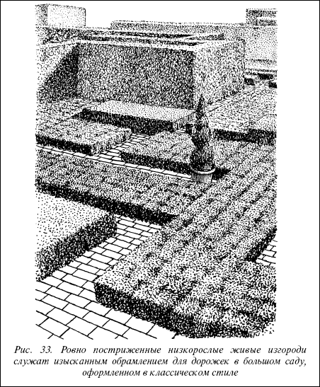
Рис. 33. Ровно постриженные низкорослые живые изгороди служат изысканным обрамлением для дорожек в большом саду, оформленном в классическом стиле
Живые изгороди красивы, практичны, долговечны и применяются как для отделения фасадной части участка от улицы, так и для ограждения его со всех сторон от соседних участков. Кроме того, живые стенки из кустарников могут служить разделительными элементами пространства сада, естественными ширмами, загораживающими нежелательные детали устройства сада, выполнять роль невысоких живых ограждений террас и площадок для отдыха.
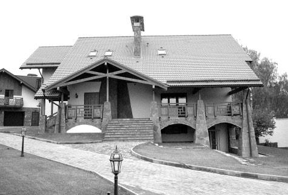
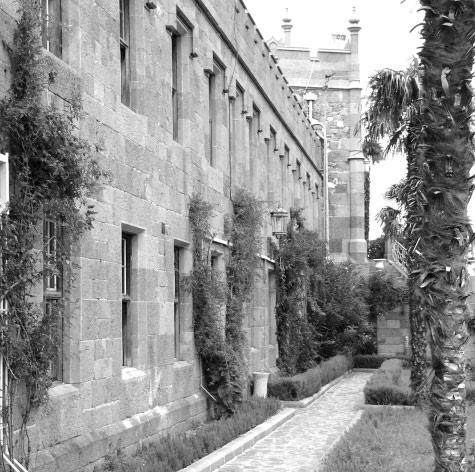
В зависимости от растений, выбранных для создания живой изгороди, они подразделяются на формируемыеи естественные.Типичная формируемая живая изгородь представляет собой строгую распланированную полосу насаждений, которую необходимо регулярно подстригать или придавать ей определенную форму. Естественная, свободно растущая живая изгородь обычно бывает составлена из растений, не поддающихся формировочной стрижке, часто это бывают цветущие растения, изумительно украшающие сад в период цветения, или растения с декоративной листвой. Выбор формы живой изгороди зависит от размеров и рельефа участка, общего композиционного решения и пристрастий владельца.
Живые изгороди вне зависимости от типа нуждаются в регулярной формировочной стрижке или систематической обрезке, являющейся непременной частью процесса ухода за растениями.
Совет
При выборе кустарников для живой изгороди необходимо учитывать особенности климата, требования к функциональности изгороди, ваши возможности по поддержанию изгороди в надлежащем виде. Кустарники в живой изгороди должны отличаться способностью образовывать плотную труднопроницаемую стену, легко переносить стрижку, обладать высокой регенерирующей способностью и быстротой роста, по возможности приносить хозяйственную пользу в виде плодов, лекарственного сырья.
Обычно живые изгороди делают комбинированными, сочетая ограду из растений с воротами и калиткой из дерева, металла или другого материала.
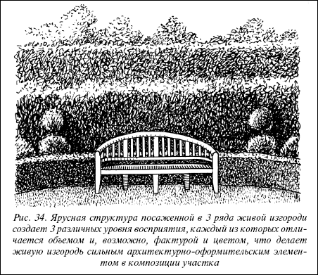
Рис. 34. Ярусная структура посаженной в 3 ряда живой изгороди создает 3 различных уровня восприятия, каждый из которых отличается объемом и, возможно, фактурой и цветом, что делает живую изгородь сильным архитектурно-оформительским элементом в композиции участка
По высоте живые изгороди подразделяют на:
• низкие, высотой до 50 см;
• средние, высотой до 1 м;
• высокие, высотой до 2 м.
Низкие живые изгороди называют также бордюрами и применяют для декоративных целей оформления участка. Средние и высокие живые изгороди служат для создания ограждения участка, отгораживания территории внутри сада. С их помощью, например, можно декорировать хозяйственные постройки или выделить место для отдыха из общего пространства участка.
Создание живой изгородиЖивые изгороди могут быть однорядными, двухрядными и трехрядними. Растения в двух-и трехрядных живых изгородях могут быть одинаковой высоты или располагаться ярусно. При ярусном размещении низкорослые кустарники высаживают на переднем плане на фоне более высоких кустарников. При трехрядной структуре живой изгороди растения можно разместить тремя уступами или ярусами (высокие, средние и низкорослые), каждый из которых будет скрывать приземную часть расположенного за ним ряда, что придаст изгороди особую декоративность. Кроме того, сочетание различных объемов и окраски рядов растений создаст живописное разнообразие и усилит красочность изгороди.
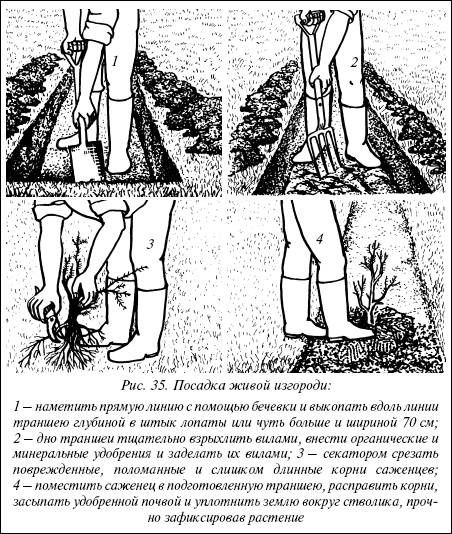
Рис. 35. Посадка живой изгороди:
1 – наметить прямую линию с помощью бечевки и выкопать вдоль линии траншею глубиной в штык лопаты или чуть больше и шириной 70 см; 2 – дно траншеи тщательно взрыхлить вилами, внести органические и минеральные удобрения и заделать их вилами; 3 – секатором срезать поврежденные, поломанные и слишком длинные корни саженцев; 4 – поместить саженец в подготовленную траншею, расправить корни, засыпать удобренной почвой и уплотнить землю вокруг стволика, прочно зафиксировав растение
На заметку
Живую изгородь можно сделать совершенно непроницаемой даже для мелких животных, если при посадке между двумя рядами кустарников натянуть невысокий ряд металлической сетки, укрепленной на деревянных кольях, или несколько рядов проволоки. Когда кустарники разрастутся, они совершенно скроют сетку, их ветви врастут в нее и переплетутся с проволокой, сделав такой защитный ряд невидимым.
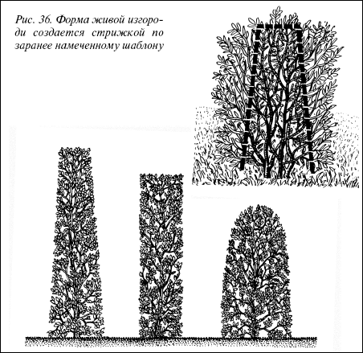
Рис. 36. Форма живой изгороди создается стрижкой по заранее намеченному шаблону
Расстояние между растениями при посадке зависит от силы их роста и максимальной высоты, которой они достигают:
• для низкорослых кустарников расстояние между саженцами в ряду составляет 20–30 см;
• для среднерослых кустарников – 40–50 см;
• для высокорослых кустарников – 70–80 см.
Совет
Посадку двухрядной живой изгороди производят в широкую траншею в два ряда в шахматном порядке. Интервал между рядами должен составлять не менее 40–50 см.
Сроки посадки зависят от растений, обычно саженцы листопадных кустарников, выращенные в открытом грунте и взятые из открытого грунта с оголенной корневой системой, высаживают осенью в обычные для посадки деревьев сроки или ранней весной.
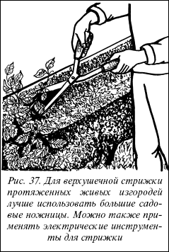
Рис. 37. Для верхушечной стрижки протяженных живых изгородей лучше использовать большие садовые ножницы. Можно также применять электрические инструменты для стрижки
Для разметки участка под живую изгородь используют колышек с привязанной к нему бечевкой, с помощью которых намечают прямую линию нужной длины. Вдоль линии выкапывают траншею глубиной на штык лопаты или при необходимости глубже и шириной 70 см.
Совет
Для сокращения сроков создания высокой живой изгороди можно применить метод обрезки, исключающий верхушечную стрижку. Для этого изгородь подравнивают только по бокам, поддерживая заданный профиль, а верхушкам дают возможность вольно расти. Таким образом, происходит быстрое наращивание высоты изгороди, и она приобретает оригинальный вид за счет сочетания четких выровненных боковых линий и кудрявых, естественно растущих верхушек.